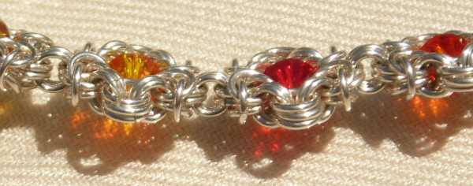

In Search of Perfect Orange
I am a redhead. My mother
is a redhead, and most of my family are redheads too -- even our pets
have red hair. Orange is therefore one color that just doesn't
get worn much in our household.
But what's wrong with orange? It had never occurred to me to use this color in jewelry, but it's a perfectly good color when used correctly. Now I want to see if I can break my blue fixation and make something good with orange. Not that I'll be able to wear it, but I'm sure orange can make a way for itself.
I may or may not make more than one attempt. If I do another one, I'll try tangerine or amber enameled copper. But I love these Swarovsky crystals...look at how lovely the light is that shines through them. They sparkle more in real life.
Sterling silver
Romanov variants with fire opal, topaz, and one other color (didn't check the name, as usual, shame on me) Swarovsky 6mm bicones.
But what's wrong with orange? It had never occurred to me to use this color in jewelry, but it's a perfectly good color when used correctly. Now I want to see if I can break my blue fixation and make something good with orange. Not that I'll be able to wear it, but I'm sure orange can make a way for itself.
I may or may not make more than one attempt. If I do another one, I'll try tangerine or amber enameled copper. But I love these Swarovsky crystals...look at how lovely the light is that shines through them. They sparkle more in real life.
Rings:
20 ga 7/64" and 1/8" IDSterling silver
Romanov variants with fire opal, topaz, and one other color (didn't check the name, as usual, shame on me) Swarovsky 6mm bicones.